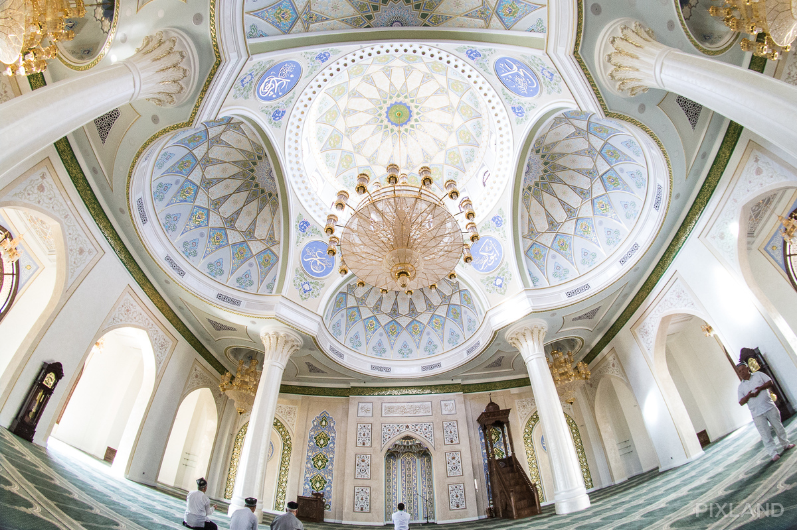

Намоз вақтлари: Намоз вақтлари: |
 Қуёш-05:08 Қуёш-05:08 |
Пешин-12:29 |
Аср-17:49 |
Шом-19:50 |
Хуфтон-21:19 |

«Ислом ота» жоме масжиди қурилди
Юрт ободлиги, халқнинг юксак маданияти белгиларидан бири илм-маърифат ва ибодат масканларининг ободлигидир. Масжидларнинг кўркамлиги халқнинг маънавияти ва эстетик дидини ҳам кўрсатиб туради. Юртимиздаги масжидларнинг бугунги чиройи замирида жуда катта маънолар бор. Куни кеча шу йил қайтадан қад растлаган яна бир муҳташам масжиднинг яқин кунларда халқимиз хизматига топширилиши ҳақидаги хабар ҳар қандай иймону инсофли одамни беҳад шодлантирди. Бу масжидга Муҳтарам Юртбошимизнинг номи берилиши эса ўзгача бир янгилик бўлди.
Шу йил 14 сентябр куни Ислом.уз портали ходимлари Тошкент шаҳар Яшнобод туманида жойлашган «Ислом ота» жомеъ масжидига ташриф буюриб, қурилиш жараёнлари билан яқиндан танишдилар. Ишлар жуда ҳам жадал, шавқ-завқ билан олиб борилмоқда. Ҳомийлар ҳам, иш юритувчилар ҳам, уста-ю ишчилар ҳам ўзгача ихлос-муҳаббат билан, жуда ҳам кўтаринки руҳда хизмат қилишмоқда. Ҳали битиб улгирмаган бу масжидга бир кириб-чиққан киши бутун ташвишларини унутиб юбориши табиий.
Бизни масжид имом-хатиби Абдулҳаким қори ака кутиб олдилар. У киши масжид қурилиши, иш жараёни ва келгусидаги режалар ҳақида сўзлаб бердилар:
«Масжид биноси ўтган йили бутунлай куйиб, тамоман яроқсиз ҳолга келган эди. Бинониннг қолдиқларини бузиш жараёнида бунга яна бир бор амин бўлинди. Шу боис, масжид мутасаддилари ва маҳалла фаолларининг таклифига биноан, Тошкент шаҳар ҳокимлиги масжидни тубдан бошқа қуришга рухсат берди.
Марҳум Юртбошимизнинг масжидларни ва зиёратгоҳларни обод қилишга бўлган эътиборлари барчага маълум. Айниқса, ушбу қадимий масжидни қайта қуришга раҳбарият томонидан алоҳида эътибор берилгани халқимизни жуда ҳам хурсанд қилди.
Ҳомийларимизни Аллоҳ ёрлақасин, қурилишнинг дастлабки кунлариданоқ ўзгача ихлос-муҳаббат ва ҳиммат билан хизмат қилишмоқда. Улар билан ҳамма ишни маслаҳатлашардигу, масжиднинг номи ҳақида ҳеч қандай гап йўқ эди. Ўтган ойнинг охирида масжидимиз бош ҳомийси Лолахон Каримова-Тиллаева қурилиш жараёни билан яқиндан танишиш мақсадида ташриф буюриб, бир қатор маслаҳатлар ўртага ташланганда ҳам бу ҳақда сўз очилмаган эди. Бироқ, кўп ўтмай халқимиз бошига оғир жудолик тушди, Ўзбекситоннинг биринчи Президенти, мустақиллигимиз асосчиси бўлган муҳтарам Президентимиз Ислом Абдуғаниевич Каримов вафот этиб қолдилар. Бу мусибат барчани қайғуга солиш барборида ушбу янги масжидга марҳум Юртбошимизнинг номлари қўйилишини тақозо қилиб қолди. Уламоларимиз, масжид жамоаси ва маҳалла фаоллари бир овоздан шу фикрга келиб қолдилар. Аллоҳ марҳум Юртбошимизнинг охиратларини обод қилсин!»
Масжиднинг Фарғона йўли бўйида, халқаро аэропорт яқинида жойлашгани алоҳида эътиборга молик. Пойтахтга келаётган меҳмонлар масжидни зиёрат қилиб, покланиб, хайрли дуолар билан кириб келадилар. Зотан, масжид инсонларни маънавий покловчи муқаддас даргоҳдир. Хусусан ушбу масжид бирор кишини бефарқ қолдирмаса керак.
Масжид замонавий қурилиш талабларига тўлиқ жавоб бериш баробарида, қадимий Шарқ меъморчилик мактаби анъаналарини ҳам ўзида акс эттирган. Қурилишда нафақат юртимизда, балки Марказий Осиё минтақасида ўз соҳасида обрў қозонган, мамлакатимиз бўйлаб жуда кўп катта-катта иншоатларни барпо қилиб келган қўлигул усталар бош. Энг муҳими ‒ мажмуанинг маънавий «архитектор»и бор, аҳли Қуръон, аҳли илм одам бош бўлиб тургани ҳамма ишда яққол балқиб турибди. Масжид деворларидаги ёзувлар, бетакрор нақшлар, таҳоратхонанинг юксак дид билан, поклик асосида қурилгани ва бошқа тарафларида имом домланинг хизмати кўриниб туради.
Масжидга киришда маҳобатли бир мезана қад кўтарган. Чап қўлда очиқ айвон бор бўлиб, иссиқ кунларда намозхонлар учун жуда ҳам қулай. Қибла тарафда жойлашган кутубхонани эса ушбу масжиднинг хусусиятларидан бири дейиш мумкин. Имом ва ноибларга тайёрланаётган замонавий қулайликларга эга катта-кичик хоналар ҳам турли хил нақшларга бой. Масжид саҳнисида шаклдор гулзорлар яратилган. Хонақоҳга киришдаги равоқ устига масжидга киришда ўқиладиган дуо битилган. Эшикнинг усти ва икки тарафига намоздан кейин айтиладиган такбир, тасбеҳ ва таҳмид жуда ҳам гўзал шаклда қайд қилинган. Хонақоҳ ўртасидаги тўрт устун ўзига хос салобати билан кўкни тутиб тургандек. Меҳробдаги нақшлар Марказий Осиёда ҳали ўхшаши йўқ. Меҳроб тепасига Бақара сурасининг 144-ояти ёзилган. Икки тарафида «Аллоҳ» ва «Муҳаммад» калималари араб ҳарфларида битилган. Меҳроб шаклидаги икки томондаги нақшлар устига шаҳодат калимаси ёзилган. Хонақоҳнинг қоқ ўртасидаги гумбазга Фотиҳа сураси битилган. Унинг пастидаги тўртта ярим доира гумбазлар кўзни қамаштирадиган нақшлари билан безанган. Гумбазлар ўратсида тўрт рошид халифа Абу Бакр, Умар, Усмон ва Алий розияллоҳу анҳумнинг исмлари битилган бўлиб, аҳли суннанинг белгиси сифатида масжидга маҳобат бахш этган. Хонақоҳ деворининг юқори қисмига, «қалби»га айланасига Қуръоннинг қалби Ёсин сураси олтин ҳарфлар билан тўлиқ ёзилган бўлиб, бу самовий «нақш» биздаги бошқа бирор масжидда учрамайди. Тўрт устунни Чорқул ‒ Кофирун, Ихлос, Фалақ ва Ан-Нос суралари безаб туради. Умуман олганда, мажмуадаги нақшларни таърифлашга тил ожиз, жуда ҳам завқбахш, беткрор.
Шу ўринда бир нарсани таъкидлаб ўтиш ўринли. Кўпинча нақшларда бошқа дин ва маданиятларнинг махсус белгилари, эътиқод рамзлари ҳам учраб қолади. Бу ҳолат ўта бепарволикдан ёки қадимдан ҳунармандлар ичида бошқа дин вакилларининг ҳам ишлари тарқаб келганидан юзага келган. Бунинг олдини олиш учун, айниқса, масжид қурилишларида аҳли илм, тажрибали кишиларнинг маслаҳатлари билан иш юритиш мақсадга мувофиқдир.
Таҳоратхонадаги шарт-шароитлар ҳам ҳар қандай намозхонни ўзига ром этади. Барча-барчаси мусулмон маданияти асосида, замонавий талабларга жавоб берадиган тарзда қилинган. Ногиронлар учун махсус хоналар ва шароит ҳозирланган.
Манзилимиз: Бухоро в, Бухоро ш
Электрон почтамиз: ilm@info.uz
Электрон почтамиз: ilm@info.uz
© 2017 Ilm.uz. Барча ҳуқуқлар ҳимояланган
ЎзМАА интернет-ОАВ гувоҳномаси рақами: 1153

Сайт USAYT веб студияси томонидан яратилган. Designer: Mohi